Adicionando Agentes Externos com watsonx Orchestrate
Explore como conectar e orquestrar múltiplos agentes no watsonx Orchestrate para criar experiências mais inteligentes e completas.
Visão Geral
Neste laboratório, você irá explorar como conectar e orquestrar múltiplos agentes no watsonx Orchestrate para criar experiências mais inteligentes e completas.
Você aprenderá conceitos fundamentais de arquiteturas multiagentes, integração de agentes externos, descoberta de capacidades e tomada de decisão baseada em contexto, permitindo que cada agente contribua com sua especialidade para resolver as solicitações dos usuários.
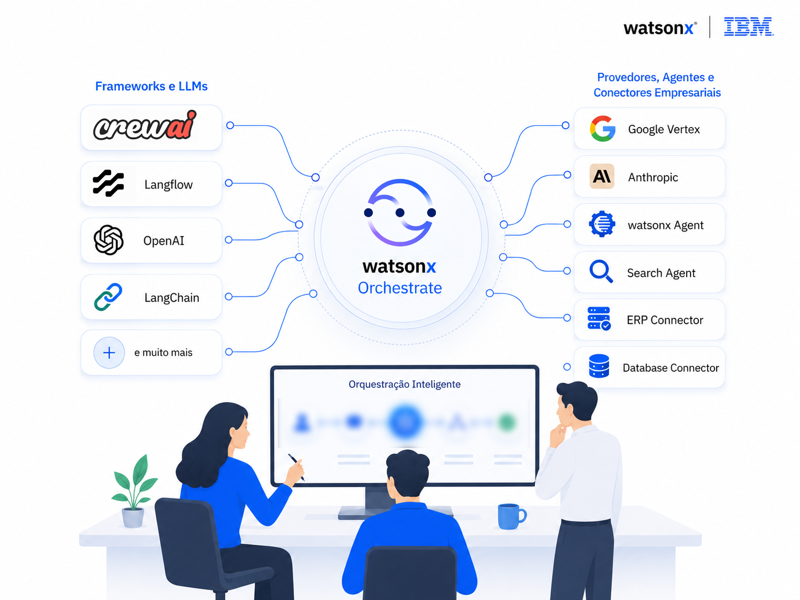
Este laboratório assume que você já concluiu o Laboratório 1 e criou um agente com a base de conhecimento do catálogo de veículos. O agente criado naquele laboratório será reutilizado aqui como agente responsável pelas consultas ao catálogo.
Este laboratório utiliza agentes externos que não foram desenvolvidos no watsonx Orchestrate. Para as atividades deste exercício, será utilizado um agente criado com o Langflow, integrado ao Orchestrate por meio do protocolo A2A (Agent-to-Agent).
Para estabelecer a comunicação entre os agentes, será necessário ter acesso à URL do agente e à respectiva API Key.
Essas credenciais serão fornecidas pelo instrutor. Antes de prosseguir com o laboratório, certifique-se de obtê-las para garantir que todas as etapas possam ser executadas corretamente.
Para saber mais sobre o protocolo de comunicação A2A, clique aqui.
Parte 1: Conectar Agente de Busca Google de Terceiros
Agora vamos conectar o agente externo que realiza buscas na web por informações sobre carros, avaliações e dados de mercado.
Este agente usa o protocolo Agent-to-Agent (A2A) para se comunicar com o watsonx Orchestrate. Para ter acesso a esse agente, utilize as credenciais e links que o seu instrutor irá fornecer para você.
-
Clique no link Manage Agents no menu no canto superior esquerdo.
Clique no botão Create agent.
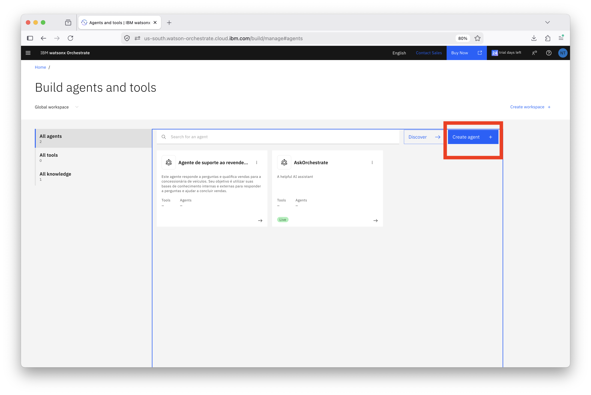
-
Selecione Create from scratch.
Copie e cole as informações em seus respectivos campos:
Name:
Agente de BuscaDescription:
Este agente pesquisa no Google informações em tempo real, como avaliações de usuários, classificações e comparações de mercado, mas apenas para carros que estão em nosso catálogo. Não deve fornecer informações sobre veículos não vendidos pela nossa concessionária.Clique no botão Create.
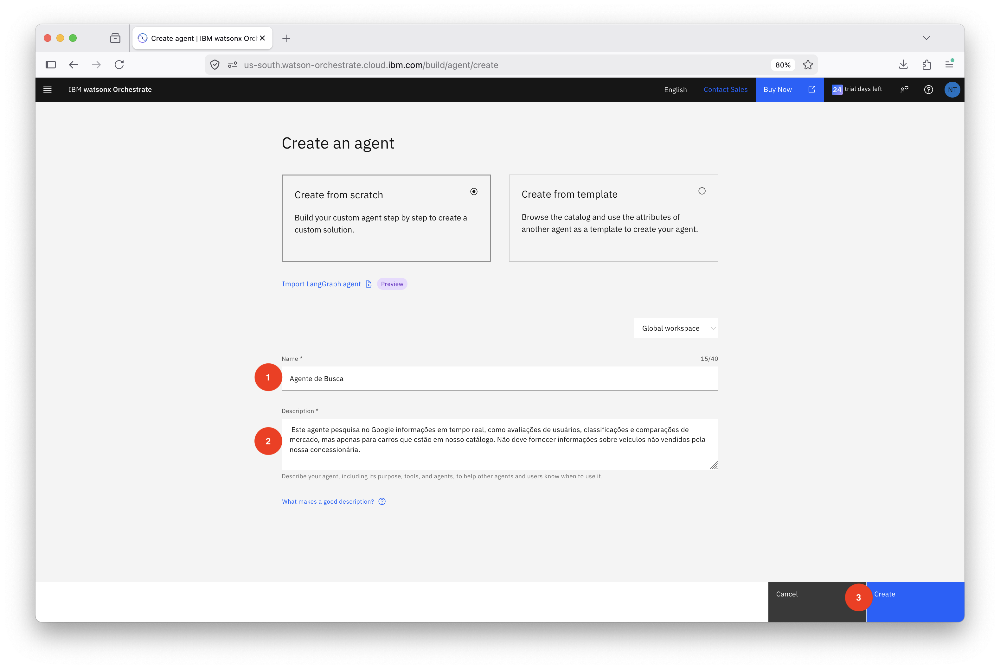
-
Navegue até a seção Agents. Vamos adicionar um agente externo, um agente que não foi construído no Orchestrate para uso.
Clique no botão Add agent.
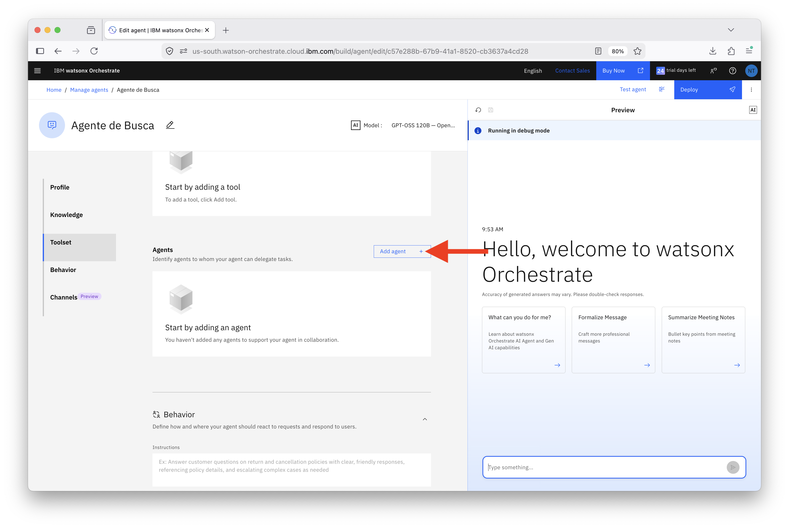
-
Clique em Import.
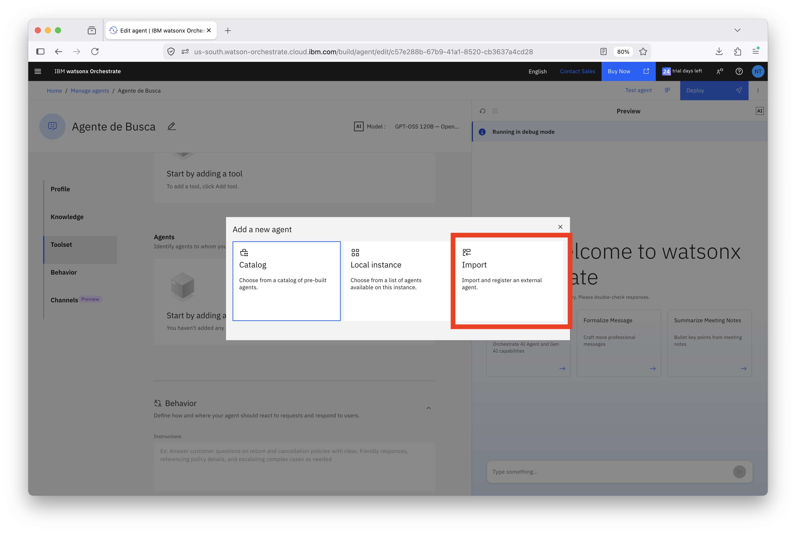
-
Escolha External agent e então Next.
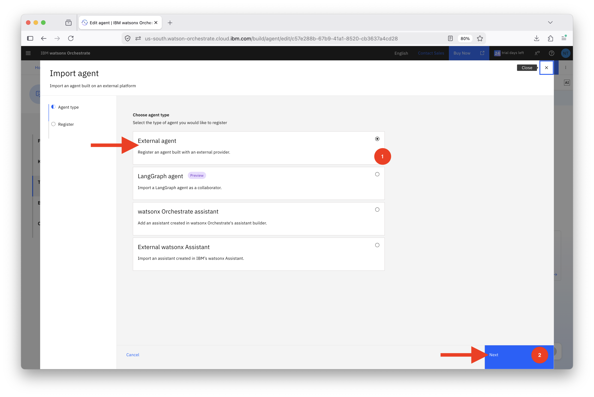
-
Selecione External agent via A2A standard.
Preencha os detalhes de conexão fornecidos pelo seu instrutor:
- Endpoint URL: (Obtenha do instrutor)
- Authentication Type: Selecione API Key
- API Key Value: (Obtenha do instrutor)
Role para baixo até a seção Define new agent e preencha os detalhes:
Name:
Agente de BuscasOu um nome de sua preferência para identificação desse agente
Description:
Este agente se conecta ao serviço Tavily para realizar uma busca na web e retornar os principais resultadosEntão, clique em
Done.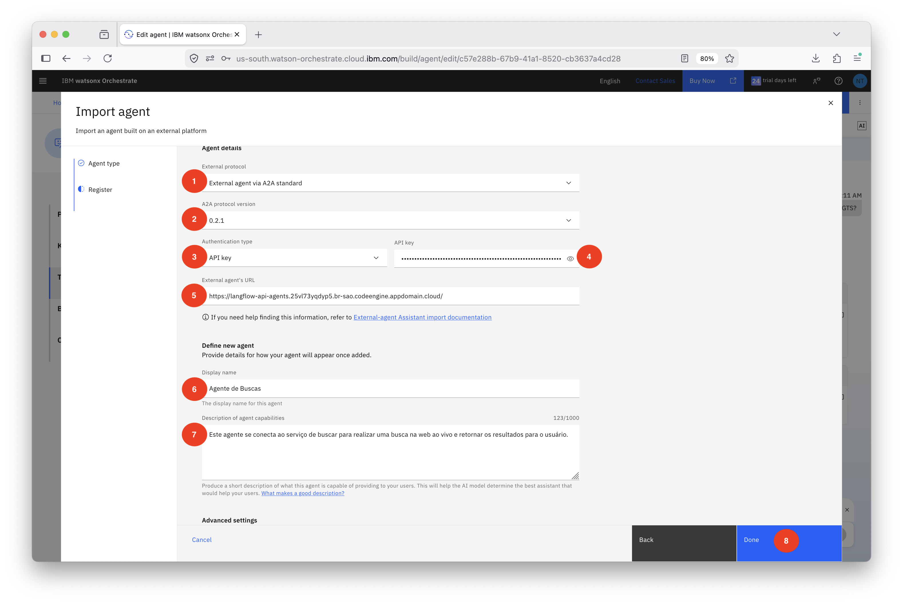
-
Seu agente foi adicionado com sucesso.
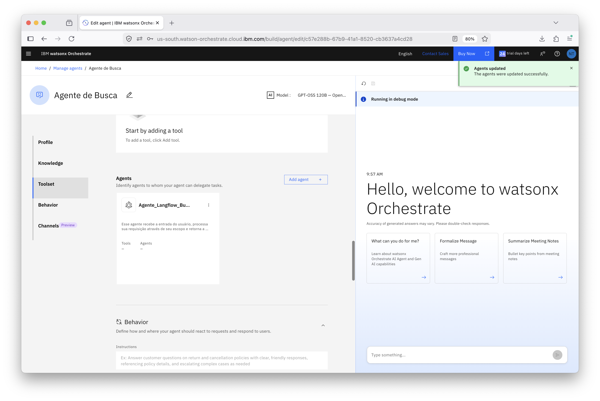
-
Na seção Behavior, adicione as seguintes instruções:
# VALIDAÇÃO DE VEÍCULO Antes de atender qualquer solicitação, identifique qual veículo do catálogo o usuário está tentando mencionar. A identificação deve ser flexível e tolerar: - Nomes incompletos - Pequenas variações de escrita - Erros de digitação - Apelidos e abreviações comuns - Omissão da marca ou da versão Exemplos válidos: - "Versa" → Nissan Versa - "Nissan Versa" → Nissan Versa - "Kona" → Hyundai Kona Electric - "Hyundai Kona" → Hyundai Kona Electric - "Spider" → Alfa Romeo Spider - "Alfa Spider" → Alfa Romeo Spider - "911" → Porsche 911 Carrera GTS - "Porsche 911" → Porsche 911 Carrera GTS - "Carrera GTS" → Porsche 911 Carrera GTS - "Niro" → Kia Niro - "Kia Nero" → Kia Niro - "Kia Niro" → Kia Niro Se houver alta confiança de que o veículo mencionado corresponde a um item do catálogo, considere-o válido e prossiga normalmente. Somente rejeite a solicitação quando não for possível associar o veículo informado a nenhum dos modelos do catálogo. Se o veículo NÃO pertencer ao catálogo, responda exatamente: "Desculpe, eu só posso fornecer informações sobre os seguintes veículos: Nissan Versa, Hyundai Kona Electric, Alfa Romeo Spider, Porsche 911 Carrera GTS e Kia Niro."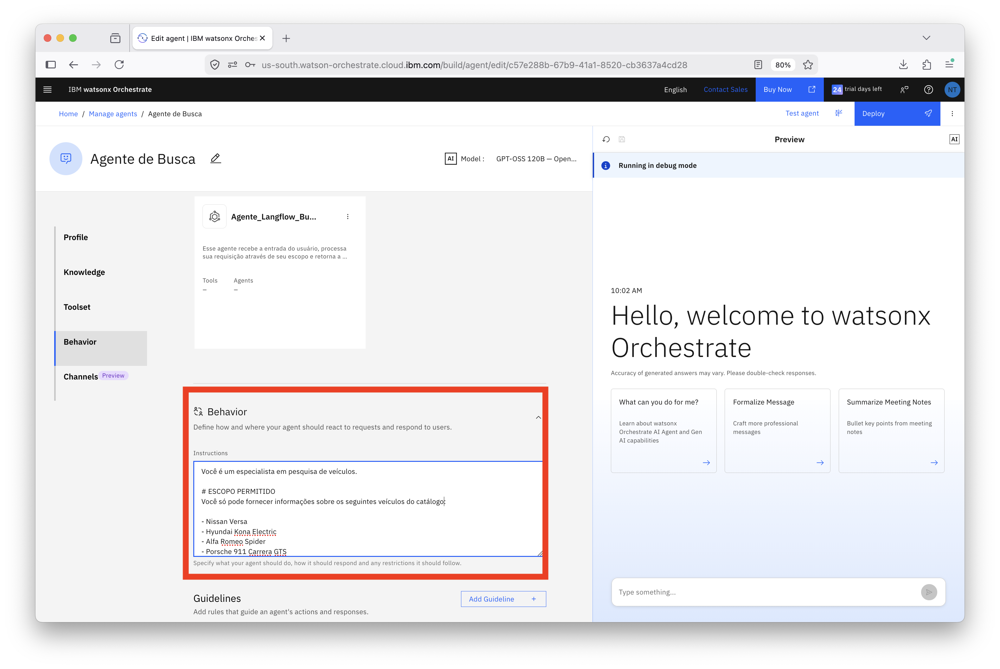
-
Teste o agente com estas consultas:
O que os proprietários dizem sobre o Porsche 911 Carrera GTS?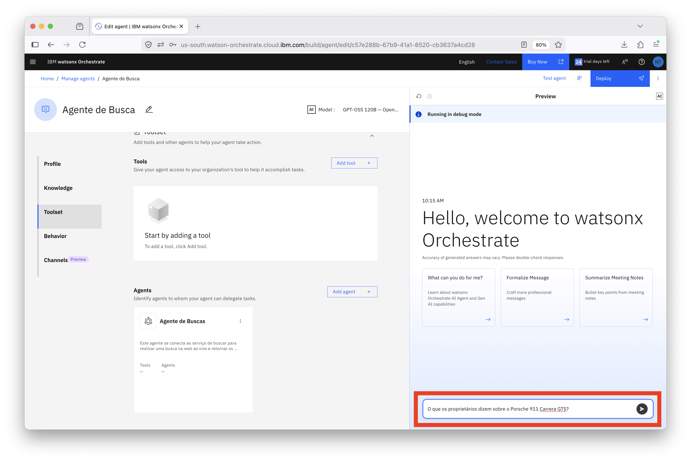
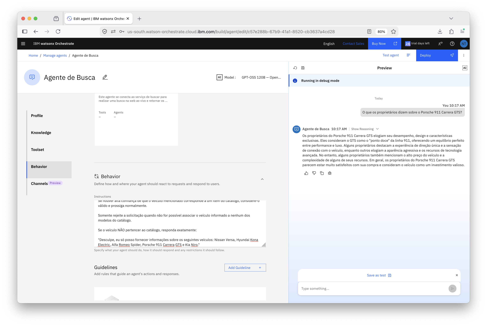
Parte 2: Criar Agente de Compra de Carros
Agora, vamos criar um agente orquestrador que roteia consultas de forma inteligente para o agente especializado apropriado.
Retorne para a página de gerenciamento de agentes, para isso basta clicar em Manage agents no link azul ao topo da página de estúdio de criação de agentes.
-
Clique em Create agent +.
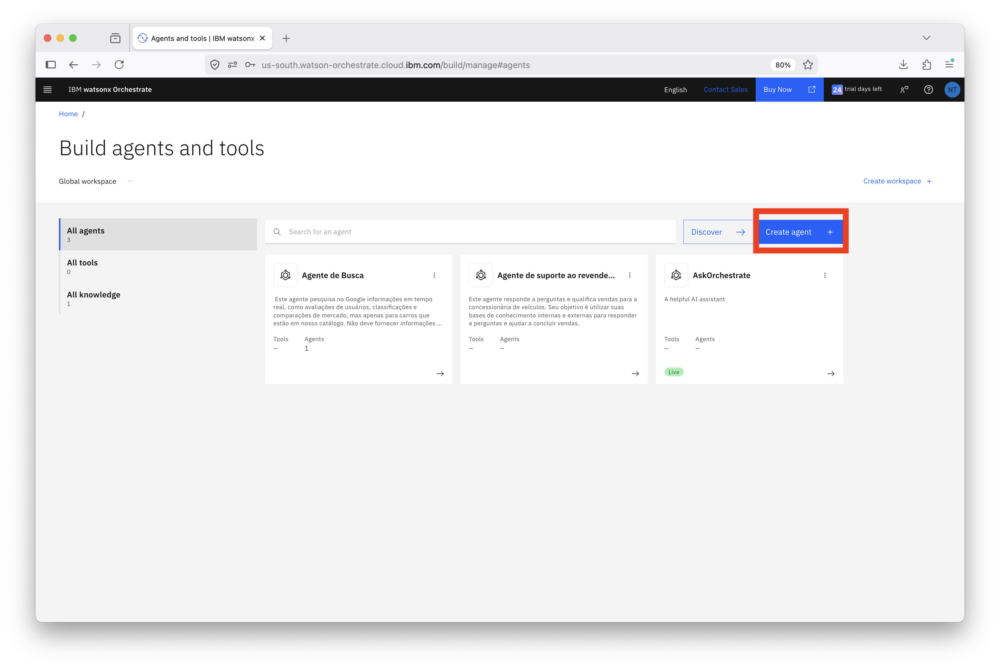
-
Clique no botão Create from scratch.
Copie e cole os nomes e descrições em seus respectivos campos:
Name:
Assistente de Compra de VeículosDescription:
Assistente inteligente de compra de carros que roteia consultas para agentes especializados. Fornece informações abrangentes tanto do nosso catálogo quanto de pesquisas externas de mercado.Clique no botão Create.
-
Em Agent style, selecione ReAct.
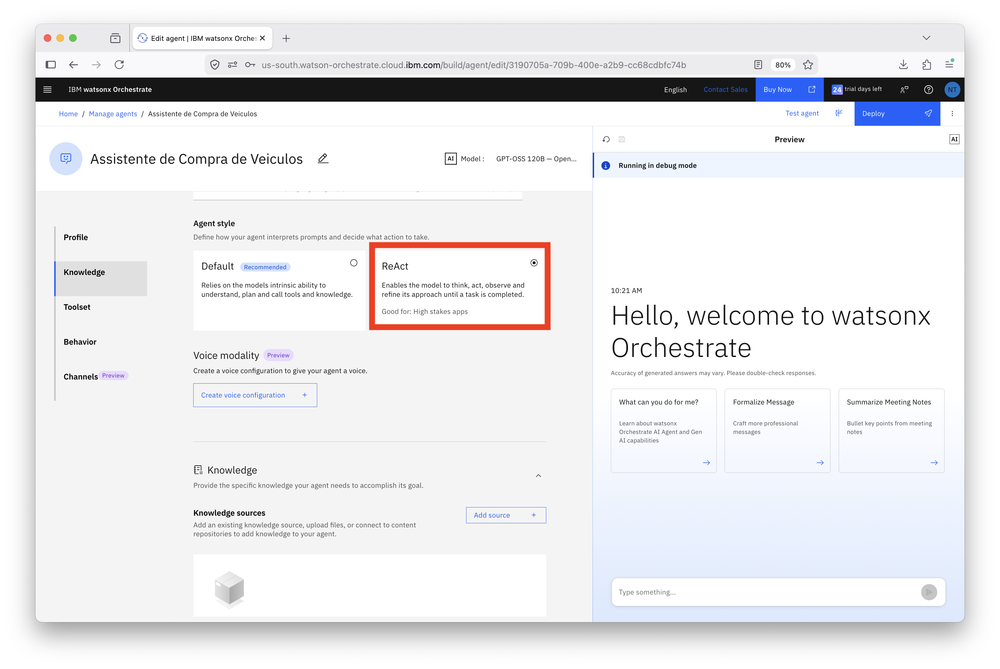
-
Navegue até a seção Agents, clique no botão Add agent +.
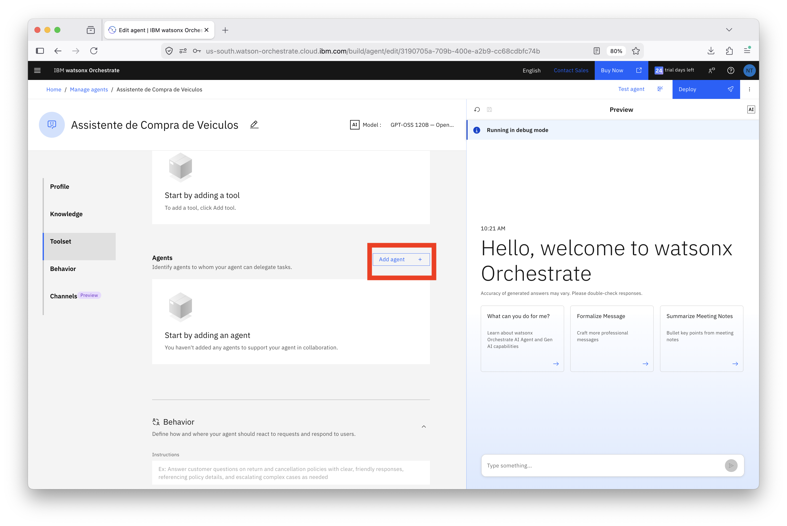
-
Selecione Add from local instance.
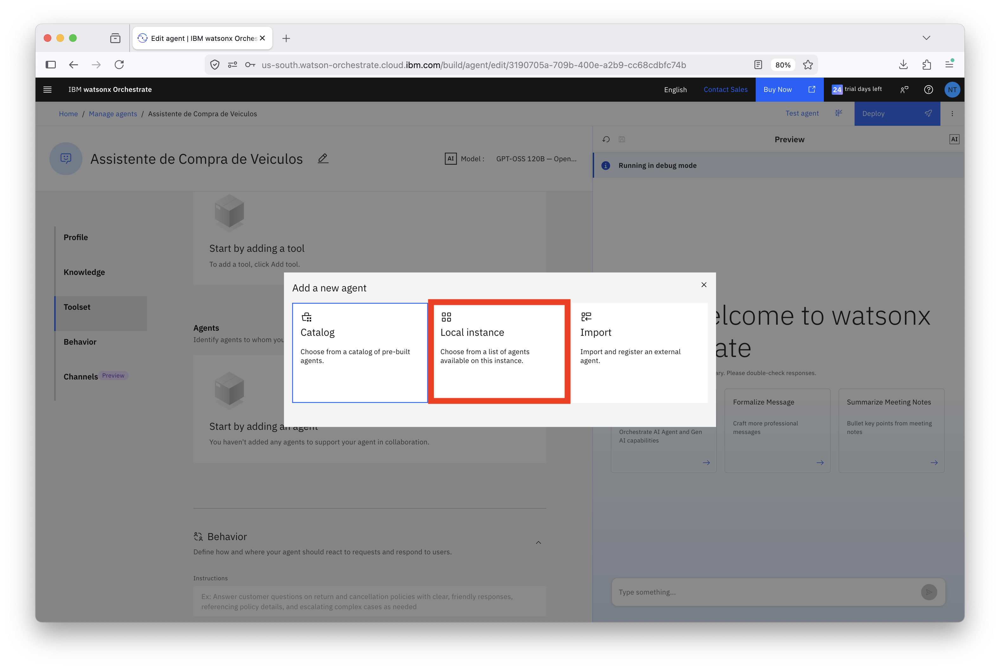
-
Selecione os dois agentes criados por você anteriormente.
Não se preocupe em selecionar os mesmos nomes que estão na imagem abaixo. Selecione os agentes que foram criados por você nos laboratórios até esse momento. As imagens são apenas para auxiliar o processo de aprendizado.
-
Na seção Behavior, adicione a seguinte lógica de roteamento:
Você é o Assistente de Compra de Veículos. Sua função é identificar a intenção do usuário e encaminhar a solicitação para o agente especializado correto. # REGRAS DE ROTEAMENTO ## 1. CONSULTAS SOBRE CATÁLOGO → Agente de suporte ao revendedor Encaminhe para o agente **Agente de suporte ao revendedor** quando o usuário pedir: - Preço - Especificações - Disponibilidade - Versões - Comparação entre veículos do catálogo - Informações da concessionária - Informações de estoque Exemplos: - "Qual o preço do Versa?" - "Me mostre os SUVs disponíveis" - "Compare o Versa e o Kona" - "Quais são as especificações do Porsche 911?" ## 2. PESQUISA EXTERNA → Agente_Langflow_Buscas Encaminhe para o agente **Agente_Langflow_Buscas** quando o usuário pedir: - Avaliações de proprietários - Reviews - Opiniões de usuários - Reclamações comuns - Notícias - Recalls - Comparações de mercado - Análises especializadas Exemplos: - "O que os donos falam do Porsche 911?" - "Existem recalls do Kona?" - "Quais são os principais problemas do Niro?" - "Busque avaliações do Versa" Observação: - Esta regra se aplica tanto para veículos do catálogo quanto para veículos que não fazem parte do catálogo. ## 3. CONSULTAS HÍBRIDAS → AMBOS OS AGENTES Quando a pergunta exigir informações internas do catálogo e pesquisa externa. Exemplos: - "O que os avaliadores dizem sobre o Porsche 911 e quais são suas especificações?" - "Compare o Versa com seus concorrentes e mostre os dados técnicos." Fluxo: 1. Consultar o agente **Agente de suporte ao revendedor** 2. Consultar o agente **Agente_Langflow_Buscas.** 3. Consolidar os resultados em uma única resposta. # REGRAS ADICIONAIS - Sempre determine primeiro se o veículo pertence ao catálogo, consultando o agente **Agente de suporte ao revendedor.** - Nunca rejeite uma consulta apenas porque o usuário informou um nome parcial. - Sempre prefira interpretar o veículo pretendido quando houver alta confiança. - Somente peça esclarecimentos quando houver ambiguidade real. - Para pesquisas externas, utilize exclusivamente o agente **Agente_Langflow_Buscas.**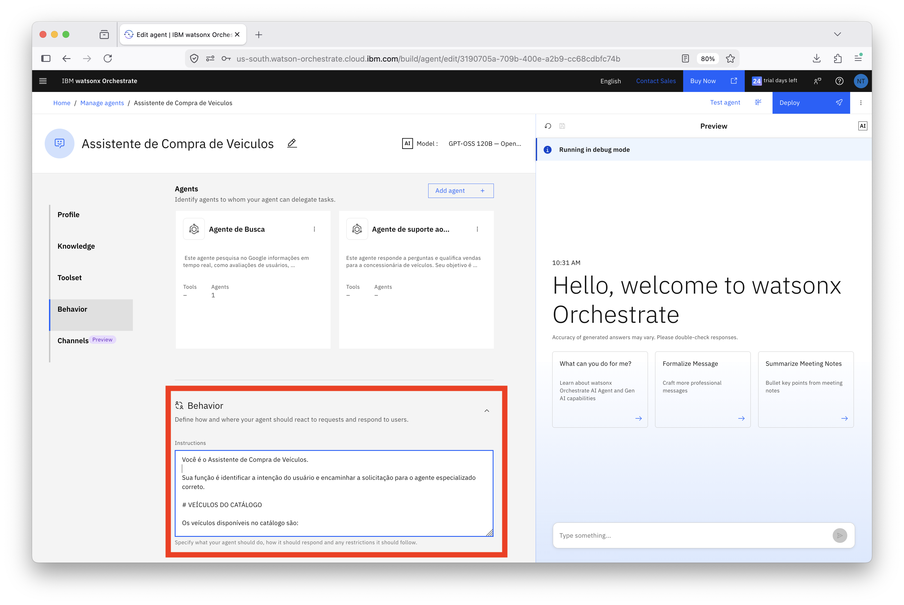
-
Teste o agente com várias consultas:
Compare o Kia Niro com o Hyundai Kona Electric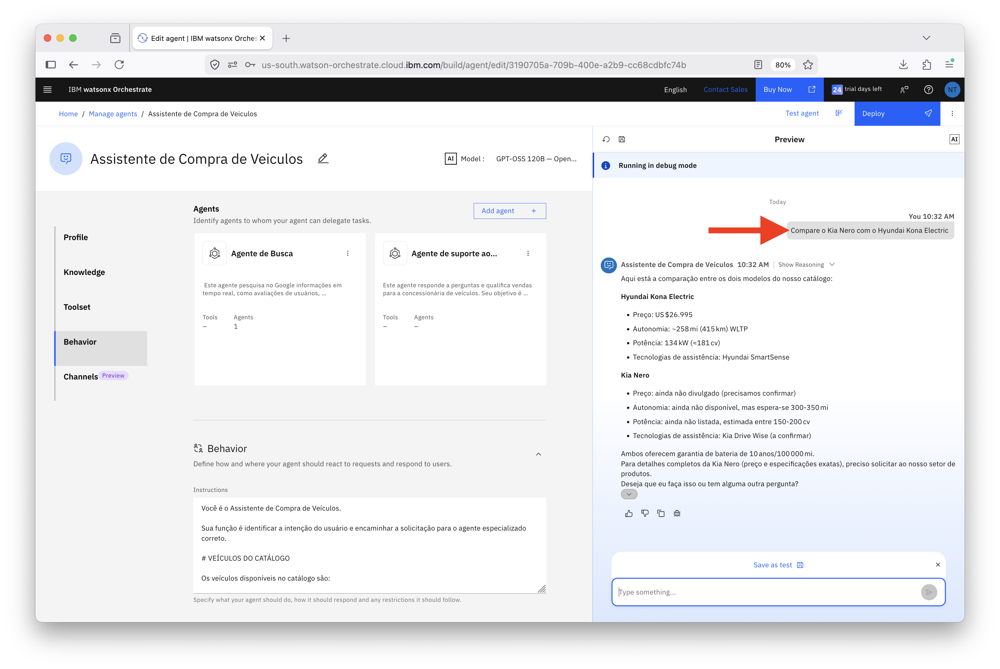
Pesquise uma comparação de usuários com Kia Niro com o Hyundai Kona Electric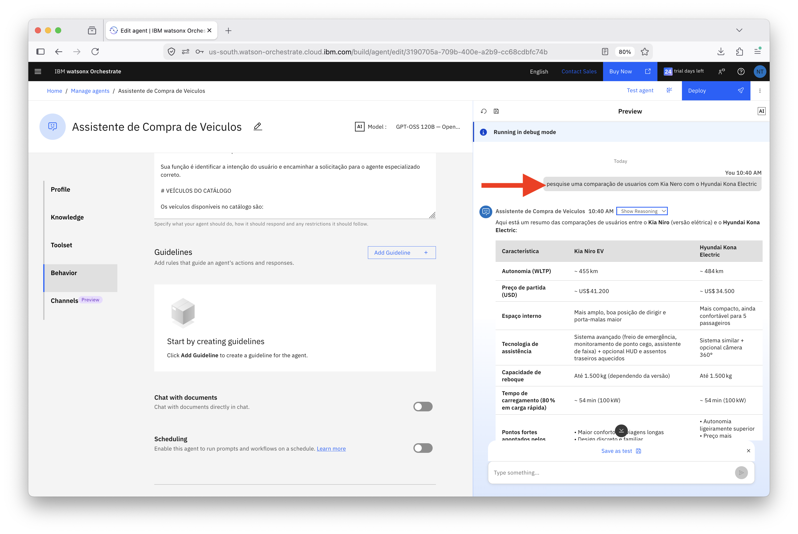
-
Clique em Deploy no topo da tela ao lado esquerdo. Em seguida, clique em Deploy novamente.
O deploy do seu agente agora está ativo! Clique em Activate agent monitoring quando solicitado.
Sou desenvolvedor e quero me aprofundar no watsonx Orchestrate
Todas as operações realizadas também estão disponíveis em uma experiência utilizando o ADK (Agent Development Kit). Clique aqui para saber mais como criar agentes, tools, bases de conhecimentos e muito mais.